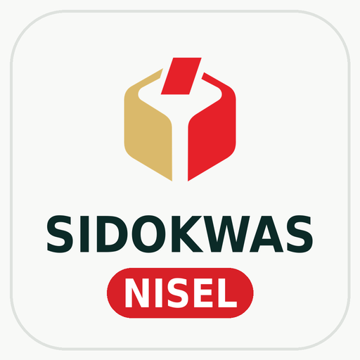

SIDOKWAS NISEL
Sistem Informasi Dokumen Pengawasan, Penanganan Pelanggaran dan Sengketa
Bawaslu Kabupaten Nias Selatan
Buka Aplikasi
Pasang di layar beranda
- Ketuk titik tiga (⋮) di pojok kanan atas peramban.
- Pilih Instal aplikasi — atau Tambahkan ke layar beranda.
- Beri nama SIDOKWAS NISEL, lalu ketuk Instal.